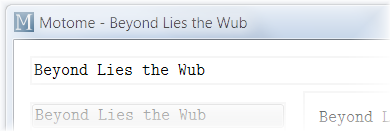
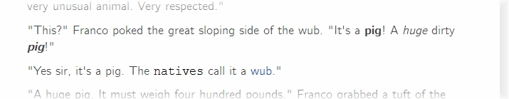
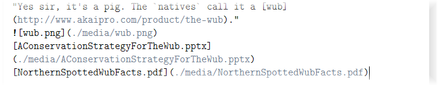
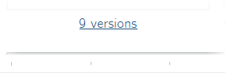
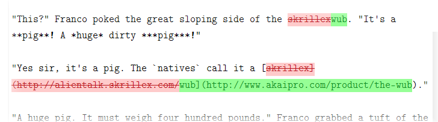

Easily create new notes from the search bar.

Format notes in easy to read Markdown for later beautification.

Synced preview is, of course, available.

Insert, drop, or paste any file into a note.

Files are linked and always accessible using your favorite programs.
Save and browse old versions of your notes.

Compare older versions with your latest masterpiece.

Motome files are just text files
Old versions are stored in zips
No proprietary, inaccessible formats here
Need to use different editor? No problem, your favorite text editor will work. (Notepad excluded )
Notes are automatically saved
Export full webpages, including linked files
Works on multiple operating systems
Motome is currently in early development and requires a Python installation with the PySide GUI framework. Binaries for Windows and OS X are in the works.
See the Github page for more information.